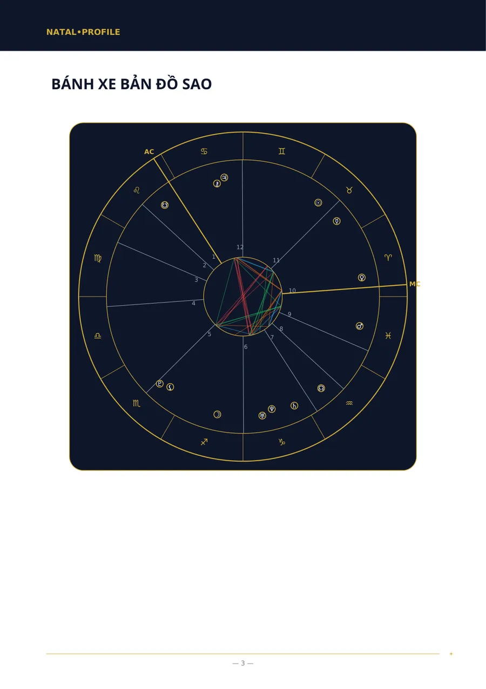
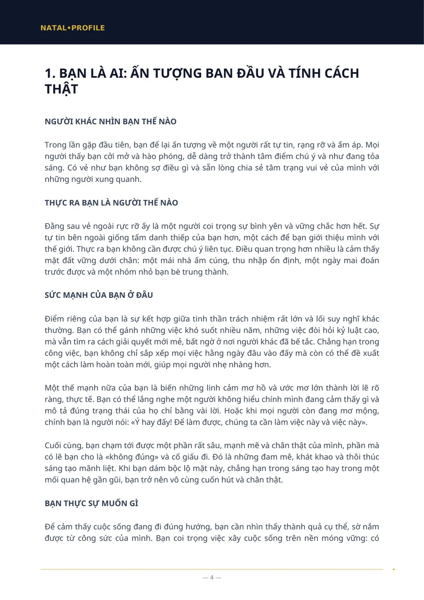
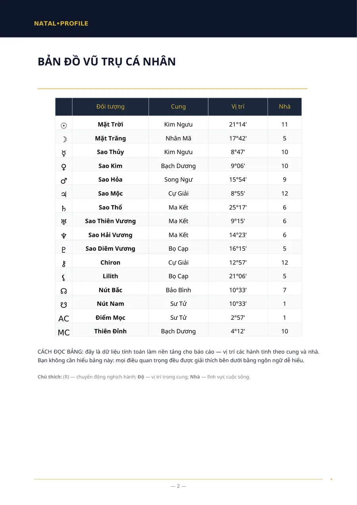
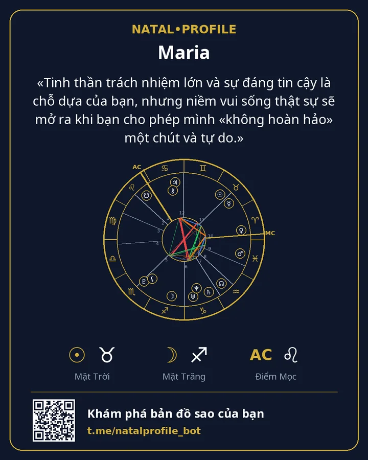

💼 Phân Tích Sự Nghiệp và Tài Chính
Bạn mạnh ở điểm nào trong công việc, nghề nào hợp và bạn quản lý tiền bạc ra sao.
- 200 ⭐ Telegram Stars
- 7 chương
Bên trong có gì
- Điểm mạnh của bạn trong công việc
- Những ngành nghề phù hợp với bạn
- Bạn nên làm việc ở đâu và với ai
- Tiền bạc: cách bạn kiếm tiền và chi tiêu
- Điều gì giúp và cản trở sự phát triển của bạn
- Cách bắt đầu những điều mới và thay đổi công việc
- Bắt đầu từ đâu: ba bước
Dành cho ai
- Bạn đang chọn nghề hoặc nghĩ đến việc đổi việc.
- Bạn muốn biết mình làm việc tốt nhất trong điều kiện nào.
- Bạn tò mò về cách mình kiếm và tiêu tiền.
Bạn cần nhập gì
Tên, giới tính, ngày, giờ và thành phố nơi sinh.
Trang ví dụ
Các trang thật của báo cáo «Bản đồ sao». Đây là ví dụ: dữ liệu ngày sinh là giả định.




Báo cáo khác
Bản Đồ Sao Cá Nhân (Phân Tích Đầy Đủ)
Bản phân tích đầy đủ về tính cách theo ngày, giờ và nơi sinh.
250 ⭐9 chương · Chi tiết →
Bản Đồ Sao Cá Nhân (Phân Tích Cơ Bản)
Bản phân tích tính cách khi không rõ giờ sinh.
150 ⭐6 chương · Chi tiết →
Phân Tích Hợp Nhau (Đầy Đủ)
Hai người: điều gì thu hút hai bạn, chỗ nào bất đồng và hai bạn mang lại gì cho nhau.
250 ⭐6 chương · Chi tiết →
Phân Tích Hợp Nhau (Cơ Bản)
Độ hợp tính cách khi không rõ giờ sinh.
150 ⭐5 chương · Chi tiết →